---
{
"layout": "note",
"title": "ch2 Stress - part3 (P, PIOLA KIRCHHOFF STRESS TENSORS)",
"journal": true,
"section": "Study",
"topic": "Continuum Mechanics",
"excerpt": "지금까지는 변형 후 를 기준으로 정의한 Cauchy Stress tensor 에 대해서 계속해서 알아보았다. 하지만, stress는 정의에 따라서, 여러가지가 존재한다. 각각 특정한 목적일때 사용에 유리하기 때문이다. 지금부터 다른 ",
"classes": "wide",
"permalink": "/blog/mechanical-engineering/continuum-mechanics/ch2-stress-part3-p-piola-kirchhoff-stress-tensors/",
"study_area": "Mechanical",
"date": "2025-02-02",
"source_url": "https://jeffdissel.tistory.com/163",
"header": {
"teaser": "/blog/mechanical-engineering/continuum-mechanics/ch2-stress-part3-p-piola-kirchhoff-stress-tensors/images/img-001.png"
}
}
---
{% raw %}지금까지는
변형 후
를 기준으로 정의한
Cauchy Stress tensor
에 대해서 계속해서 알아보았다.
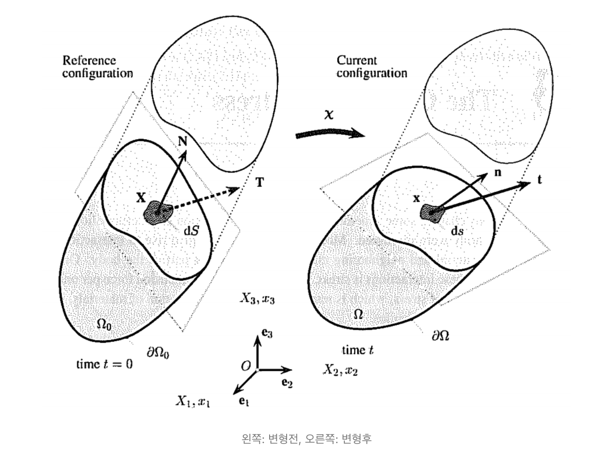
하지만, stress는 정의에 따라서, 여러가지가 존재한다.
각각 특정한 목적일때 사용에 유리하기 때문이다.
지금부터 다른 stress종류들 중에서
PIOLA KIRCHHOFF STRESS TENSORS(P, S)
에 대해서 살펴보자.
1st Piola Kirchhoff stress tensor(P)
사실 1st Piola Kirchhoff stress tensor(P)에
대해서는 이미 part1에서 증명하였다.
빠르게 짚고 넘어가보자.
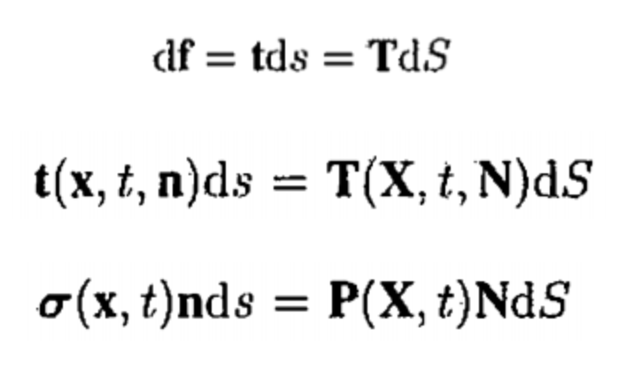
변형 전 값들(ds,σ,n,t). , 변형후 값들(dS, P, N, T)
변형전 후 면적의 관계로 변형 전 후 부피 관계식을
다음과 같이 유도가능하다.
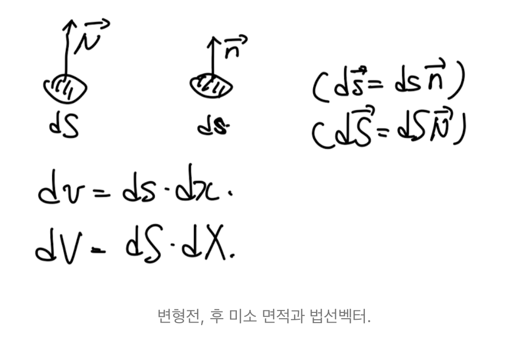
여기에 det(F) = J를 사용하여, 변형 전 후 부피
변화식도 존재하므로, 위 식과 연립해주자.
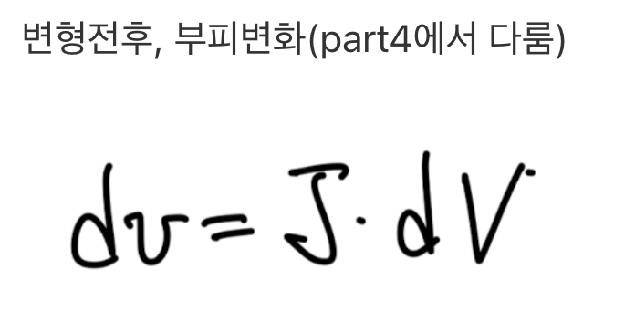
연립후 도출된 변형전후 면적의 관계식을
Nanson's Formula라고 칭한다.
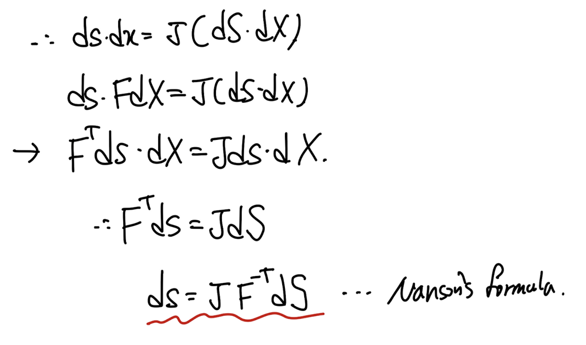
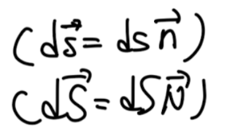
(유도된 ds, dS는 벡터)
위 Formula를 초기에 정의한 stress tensor식에 대입해주면,
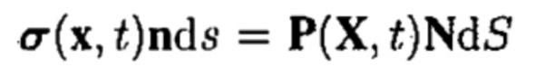
최종적으로 Cauchy stres tensor와
1st Piola Kirchhoff stress tensor의
관계식을 유도하였다.
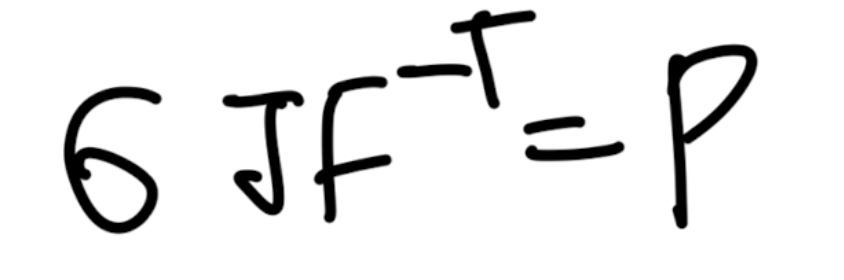
즉, 변형전 면적을 기준으로 정의한 stress가
1st PK stress(P)라는 것.
1st가 있다면, 2nd도 있겠죠?
2nd Piola Kirchhoff stress tensor(S)
두번재 PK stress는 특이하다
정의 자체를 df는 변형후의 힘,
df~ 는 변형전의 힘이라고 정의한다.
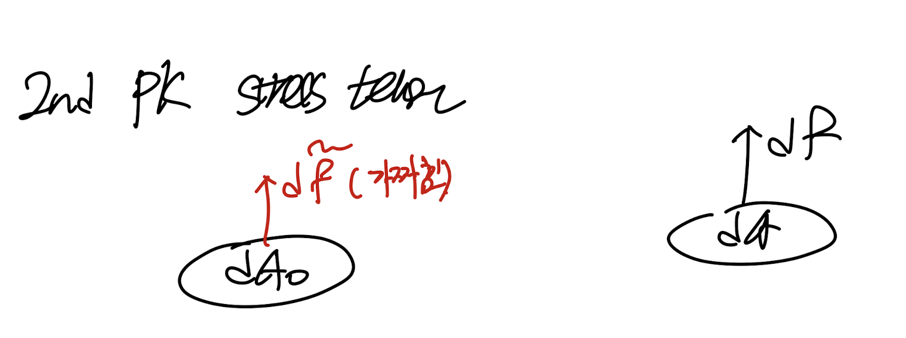
그리고, Deformation Gradient tensor
dx = F dX에서 F를 사용하여,
다음과 같이 정의한다(df는 우리가 알고 있는 실제값)
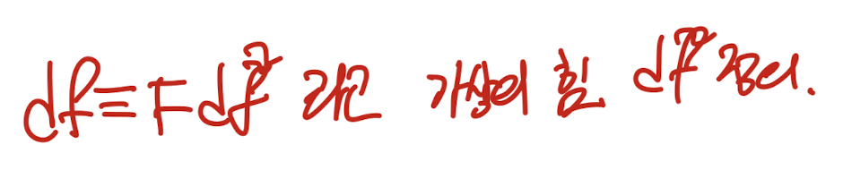
df는 실제 존재하는 값, df~는 상상의 값.
위의 새로운 정의를 토대로,
우리가 지금까지 정의한 Traction vector와
Stress tensor를 똑같이 유도한다.
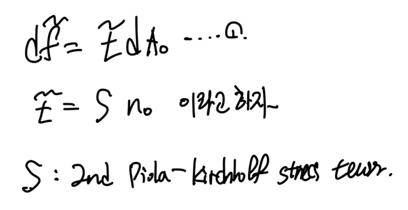
S로 새롭게 정의 2차 PK Stress tensor.
1의 정의에 가상의힘을 실제 힘으로 바꾸어 주자.
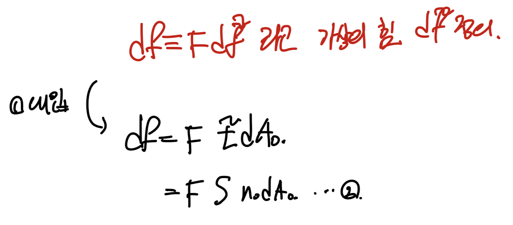
여기서 똑같은 df로 우리는
Cauchy stress tensor, 1st PK Stress tensor를 정의하였음을
잊지말자.
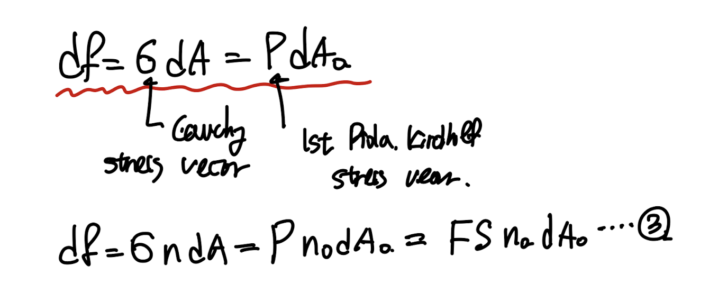
따라서, 3번식을 정리하면
우리는 Cauchy& 2nd PK stress tensor relationship
1st & 2nd PK stress tensor relationship
을 유도할 수 있다.
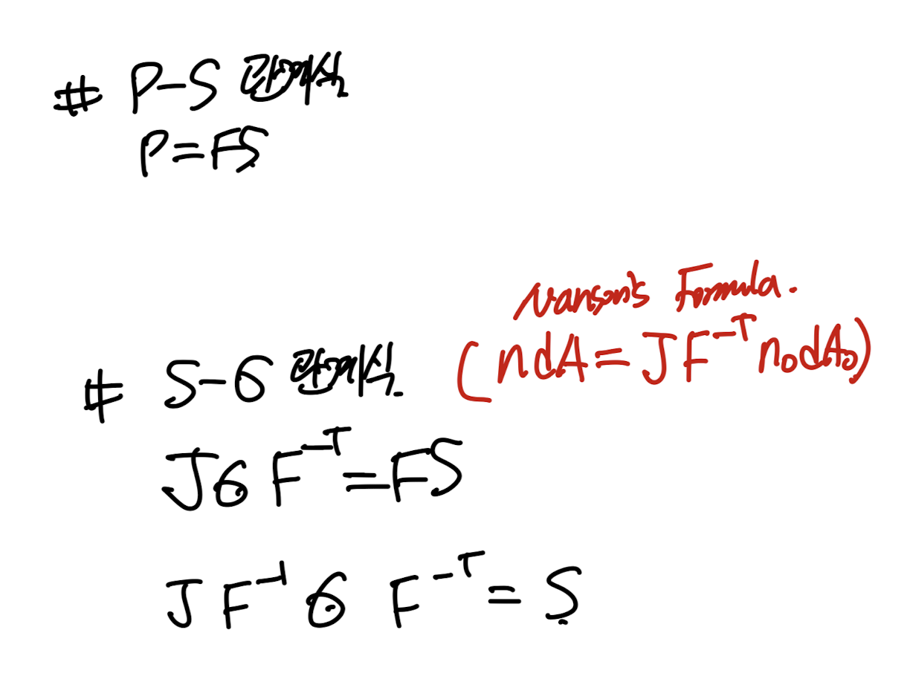
이렇게 다르게 stress를 정의하는 이유 자체는
이득인 상황이 각각 다르기 때문이겠죠?
그렇다면 각각 어떤 용도에서 사용된지 gpt한테 물어보자.
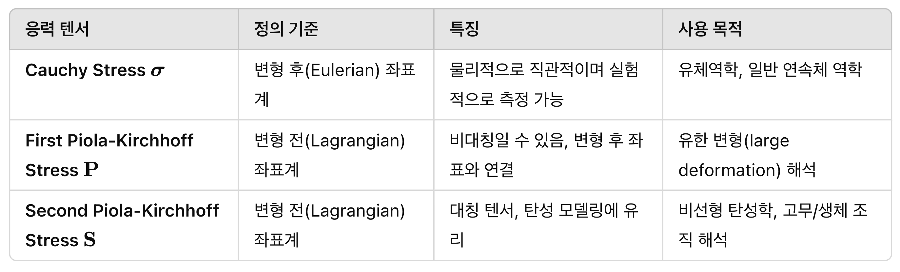
변형전, 후가 다르다는 것은 크게 와닿지만,
비대칭과 대칭텐서 즉 P,S의 차이가 크게 와닿지는 않는다.
이후에 정리할 Non linear hyperelastic model을
공부할때 아마 두 tensor의 용도 차이가 크게 와닿을 것 같다.{% endraw %}